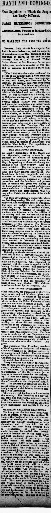
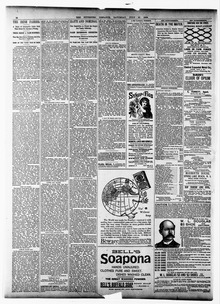

See the full pageVer la página completaBean, "Vce President ot the railroad company known as the SanBean, «Vicepresidente de la compañía ferroviaria conocida como la San
Mr. McKay of New York is building an iron bridge across the Ozama River connecting San Domingo City with Pagarito, with absolute usufruct of the river for 30 years. H. L. Bean received a concession to build a road from Barahona to Mazavilla through the Neiba forest and salt mountains, and Ogden P. Bell received a concession for a railroad from San Domingo to Azua, with the government guaranteeing 6 per cent interest on $400,000 for the first 23 miles in a district producing sugar, coffee and cocoa and rich in gold, copper and iron.El Sr. McKay, de Nueva York, está construyendo un puente de hierro sobre el río Ozama que conecta la ciudad de Santo Domingo con Pagarito, con usufructo absoluto del río por 30 años. H. L. Bean recibió una concesión para construir un camino de Barahona a Mazavilla a través del bosque de Neiba y las montañas de sal, y Ogden P. Bell recibió una concesión para un ferrocarril de Santo Domingo a Azua, con el gobierno garantizando un interés del 6 por ciento sobre 400.000 dólares por las primeras 23 millas en un distrito que produce azúcar, café y cacao y es rico en oro, cobre y hierro.
FULL TEXT:TRADUCCIÓN:
HAYTI AND DOMINGO.HAITÍ Y DOMINGO.
Two Republics in Which the People Are Vastly Different.Dos repúblicas en las que el pueblo es vastamente diferente.
FALSE IMPRESSIONS CORRECTEDIMPRESIONES FALSAS CORREGIDAS
About the Latter, Which Is an Inviting Field for Americans.Sobre la segunda, que es un campo invitador para los estadounidenses.
NO WARS FOR THE PAST TEN YEARSSIN GUERRAS POR LOS PASADOS DIEZ AÑOS
BOSTON, July 26.—It is a singular fact, but it is nevertheless true, that the majority of Americans regard San Domingo and the Republic of Hayti as one and the same country. Hon. H. C. C. Astwood, United States Consul at San Domingo for the past eight years, was in town a day or two ago, and in response to a question put to him, said:BOSTON, 26 de julio.—Es un hecho singular, pero es sin embargo cierto, que la mayoría de los estadounidenses consideran a Santo Domingo y la República de Haití como uno y el mismo país. El Honorable H. C. C. Astwood, Cónsul de los Estados Unidos en Santo Domingo por los pasados ocho años, estuvo en la ciudad hace un día o dos, y en respuesta a una pregunta que se le hizo, dijo:
"Yes, I find that the major portion of the people of our country have a very erroneous impression of San Domingo. San Domingo, as you well know, was discovered by Columbus. Its original name was Hispaniola, or Little Spain. The island was afterward divided between the French and Spaniards. The easterly or Spanish portion was two-thirds of the island and was called Quigualla. It was discovered on a Sunday, and so Columbus christened it San Domingo, after the great saint. In the western or French section slavery was introduced, and hence the population was largely made up of Africans or blacks. Strange to say, slavery was not introduced to any great extent in the eastern end of the island. The native Caribs, or Indians, numbering several millions, were utilized by the Spaniards in working the gold mines, building a walled city and constructing immense fortifications, now to be seen in a perfect state of preservation at San Domingo City and many other portions of the republic. American tourists, including several from Boston, have said to me recently that it is exceedingly strange that San Domingo has remained in obscurity, with its splendid relics of antiquity, which, if generally known, would bring thousands of Americans who visit the West Indies. The population of the eastern portion, known as«Sí, encuentro que la mayor porción del pueblo de nuestro país tiene una impresión muy errónea de Santo Domingo. Santo Domingo, como usted bien sabe, fue descubierto por Colón. Su nombre original era La Española, o Pequeña España. La isla fue después dividida entre los franceses y los españoles. La porción oriental o española era dos tercios de la isla y era llamada Quigualla. Fue descubierta un domingo, y así Colón la bautizó Santo Domingo, por el gran santo. En la sección occidental o francesa se introdujo la esclavitud, y por tanto la población estaba compuesta en gran parte de africanos o negros. Extraño decir, la esclavitud no fue introducida en gran medida en el extremo oriental de la isla. Los nativos Caribes, o Indios, que sumaban varios millones, fueron utilizados por los españoles en trabajar las minas de oro, construir una ciudad amurallada y construir inmensas fortificaciones, ahora visibles en un perfecto estado de preservación en la ciudad de Santo Domingo y muchas otras porciones de la república. Turistas estadounidenses, incluyendo varios de Boston, me han dicho recientemente que es extremadamente extraño que Santo Domingo haya permanecido en la oscuridad, con sus espléndidas reliquias de antigüedad, que, si generalmente conocidas, traerían a miles de estadounidenses que visitan las Indias Occidentales. La población de la porción oriental, conocida como
THE DOMINICAN REPUBLIC,LA REPÚBLICA DOMINICANA,
are chiefly descendants of the Caribs and the Spaniards, making a race in appearance not unlike the Spaniards themselves. San Domingo is often taken for Hayti in speaking of the revolutionary tendencies of the latter country. This is a great mistake. The two peoples are distinct in every particular—in language, customs and their general deportment. The Dominican is kind, hospitable and very attentive to strangers. You may travel through the republic, unarmed or without protection, and the humblest and poorest man or woman will greet you kindly in his home and have you partake of whatever accommodation it affords, and will absolutely refuse any compensation that you may offer. This is the character of the whole people.«son principalmente descendientes de los Caribes y los españoles, haciendo una raza en apariencia no muy diferente a los españoles mismos. Santo Domingo es a menudo tomado por Haití al hablar de las tendencias revolucionarias del último país. Este es un gran error. Los dos pueblos son distintos en cada particular—en idioma, costumbres y su conducta general. El dominicano es amable, hospitalario y muy atento con los extraños. Usted puede viajar por la república, sin armas o sin protección, y el hombre o mujer más humilde y pobre lo saludará amablemente en su hogar y lo hará participar de cualquier acomodación que ofrezca, y rehusará absolutamente cualquier compensación que usted pueda ofrecer. Este es el carácter de todo el pueblo.
"In their revolutionary upheavals, which are fast disappearing, life and property are respected, and especially those of strangers. The cases are isolated where this has been otherwise, except by naturalized Cubans, Porto Ricans or persons of Spanish extraction, who interfere with the politics of the country and are maltreated, and then appeal to their Governments as having been outraged. These instances are often published without any explanation, to the great detriment of the country. The Spanish portion of the Dominican Republic is just as beautiful as nature could have made it. There is an immense area in almost virgin state, capable of supporting in luxury and ease quite 10,000,000 of people. The population is a sparse one, numbering not more than 400,000. It abounds in beautiful woods, such as mahogany, satin wood, fustic, etc. There are scarcely any roads or means of conveyance to have these valuable woods shipped to foreign countries."«En sus convulsiones revolucionarias, que están desapareciendo rápidamente, la vida y la propiedad son respetadas, y especialmente las de los extraños. Los casos son aislados donde esto ha sido de otro modo, excepto por cubanos naturalizados, puertorriqueños o personas de extracción española, que interfieren con la política del país y son maltratados, y entonces apelan a sus Gobiernos como habiendo sido ultrajados. Estos casos son a menudo publicados sin explicación alguna, para gran detrimento del país. La porción española de la República Dominicana es tan hermosa como la naturaleza pudo haberla hecho. Hay una inmensa área en estado casi virgen, capaz de soportar en lujo y facilidad a bien 10,000,000 de personas. La población es escasa, sumando no más de 400,000. Abunda en hermosas maderas, tales como caoba, madera de satín, fustete, etc. Apenas hay caminos o medios de transporte para tener estas valiosas maderas embarcadas a países extranjeros.»
Referring to the Government, Consul Astwood said it was a very liberal one. It is composed of a President, Vice President, Supreme Court and a National Congress made up of 12 districts. The President is invested with the power to appoint the following Cabinet officers: The Secretary of State and Interior Police, the Secretary of State of Foreign Relations, the Secretary of State of Finance and Commerce, the Secretary of State of Improvement and Public Work, the Secretary of State of Justice and Public Instruction and the Secretary of State of War and Marine. This Cabinet must be confirmed by the Congress. AllRefiriéndose al Gobierno, el Cónsul Astwood dijo que era uno muy liberal. Está compuesto de un Presidente, Vicepresidente, Corte Suprema y un Congreso Nacional compuesto de 12 distritos. El Presidente está investido con el poder de nombrar los siguientes oficiales del Gabinete: El Secretario de Estado y Policía Interior, el Secretario de Estado de Relaciones Exteriores, el Secretario de Estado de Finanzas y Comercio, el Secretario de Estado de Fomento y Obras Públicas, el Secretario de Estado de Justicia e Instrucción Pública y el Secretario de Estado de Guerra y Marina. Este Gabinete debe ser confirmado por el Congreso. Todos
ACTS OF THE GOVERNMENT,LOS ACTOS DEL GOBIERNO,
other than laws, are transacted by the Executive power, and each Minister gives a detailed account of the officers of his department through the President to Congress, which meets on the 27th of February of each year and continues in session 90 days. All contracts and concessions granted by the Executive power must be submitted to Congress for its approval and published in the official paper, after having received the signature of the Corresponding Secretary of State before it can become a law. All laws emanating from Congress, after a third reading at three distinct meetings, are forwarded to the President for execution. If not returned within eight days they become laws. A two-thirds vote of Congress will set aside the Executive veto. The Congress is made up of two Representatives from each province and from each district. There are six provinces and six districts, or 22 members, who form the National Congress.aparte de las leyes, son tramitados por el poder Ejecutivo, y cada Ministro da una cuenta detallada de los oficiales de su departamento a través del Presidente al Congreso, que se reúne el 27 de febrero de cada año y continúa en sesión 90 días. Todos los contratos y concesiones otorgados por el poder Ejecutivo deben ser sometidos al Congreso para su aprobación y publicados en el periódico oficial, después de haber recibido la firma del Secretario de Estado Correspondiente antes de que pueda convertirse en ley. Todas las leyes emanadas del Congreso, después de una tercera lectura en tres reuniones distintas, son enviadas al Presidente para su ejecución. Si no son devueltas dentro de ocho días se convierten en leyes. Un voto de dos tercios del Congreso dejará de lado el veto Ejecutivo. El Congreso está compuesto de dos Representantes de cada provincia y de cada distrito. Hay seis provincias y seis distritos, o 22 miembros, que forman el Congreso Nacional.
The President, Vice President, members of the Congress and Judges of the Supreme Court are chosen by an electoral college by primaries in each district. The vote of each college district is forwarded to the National Congress, the members of which count the vote and declare the election.El Presidente, Vicepresidente, miembros del Congreso y Jueces de la Corte Suprema son elegidos por un colegio electoral por primarias en cada distrito. El voto de cada distrito del colegio es enviado al Congreso Nacional, cuyos miembros cuentan el voto y declaran la elección.
Every foreigner has, under the Constitution, the same right to acquire property and engage in business, without let or hindrance as a Dominican. His property is subject to the protection of the Government just so long as he does not surrender his nationality. Aliens may become naturalized after a residence of one year, by making declaration of intention to the competent authorities. The country has developed rapidly in recent years, owing to the large amount of foreign capital which is being invested principally by Americans.Todo extranjero tiene, bajo la Constitución, el mismo derecho de adquirir propiedad y dedicarse a los negocios, sin impedimento ni obstáculo como un dominicano. Su propiedad está sujeta a la protección del Gobierno siempre que no renuncie a su nacionalidad. Los extranjeros pueden naturalizarse después de una residencia de un año, haciendo declaración de intención a las autoridades competentes. El país se ha desarrollado rápidamente en años recientes, debido a la gran cantidad de capital extranjero que se está invirtiendo principalmente por estadounidenses.
There is a great tendency to Americanize the country. The President is a very liberal man, and admires the progressive spirit of the Yankees. He is very solicitous to have them come to San Domingo, and offers every inducement and facility in the way ofHay una gran tendencia a americanizar el país. El Presidente es un hombre muy liberal, y admira el espíritu progresista de los Yanquis. Es muy solícito de que vengan a Santo Domingo, y ofrece todo incentivo y facilidad en el modo de
GRANTING VALUABLE FRANCHISES.OTORGAR VALIOSAS FRANQUICIAS.
He has given the Bay State Fruit Company, of Boston, of which Mr. William M. Snow is the President, a very profitable concession to develop the fruit trade. This company has already established a large plantation, and I am told that the bananas are now being brought here on steamships. If this company would increase its capital San Domingo would become one of the most important fruit producing islands in the West Indies, on account of proximity to the United States. Its most distant points would be about 1,600 miles, so you see an ordinary 12-knot steamer could make the trip in six days. The republic is rapidly being spanned by railroads constructed by Americans. Mr. Nathaniel McKay, a New Yorker, is building an iron bridge across the Ozama river, connecting San Domingo City with the historical town of Pagarito. Mr. McKay has the absolute usufruct of the river for 30 years, which will be a very large income upon the capital invested.Ha dado a la Bay State Fruit Company, de Boston, de la cual el Sr. William M. Snow es el Presidente, una concesión muy provechosa para desarrollar el comercio de frutas. Esta compañía ya ha establecido una gran plantación, y me dicen que los plátanos están siendo traídos aquí en vapores. Si esta compañía aumentara su capital Santo Domingo se convertiría en una de las islas productoras de frutas más importantes en las Indias Occidentales, a causa de la proximidad a los Estados Unidos. Sus puntos más distantes estarían a unas 1,600 millas, así que usted ve que un vapor ordinario de 12 nudos podría hacer el viaje en seis días. La república está siendo rápidamente cruzada por ferrocarriles construidos por estadounidenses. El Sr. Nathaniel McKay, un neoyorquino, está construyendo un puente de hierro sobre el río Ozama, conectando la ciudad de Santo Domingo con el histórico pueblo de Pagarito. El Sr. McKay tiene el usufructo absoluto del río por 30 años, que será un ingreso muy grande sobre el capital invertido.
Mr. H. L. Bean, Vice President of the railroad company known as the San Domingo Central, has been granted a concession in land, etc., to construct a road from Barahona on the south to Mazavilla on the north. This road passes through the valuable wooded forest of Neiba and the immense salt mountains, about 25 miles from Barahona. These salt mines are inexhaustible, and produce salt in blocks, as beautifully transparent as ice. It is said to be the very best known. Samples of it can beEl Sr. H. L. Bean, Vicepresidente de la compañía ferroviaria conocida como el Central de Santo Domingo, ha recibido una concesión en tierra, etc., para construir un camino desde Barahona en el sur hasta Mazavilla en el norte. Este camino pasa por el valioso bosque arbolado de Neiba y las inmensas montañas de sal, a unas 25 millas de Barahona. Estas minas de sal son inagotables, y producen sal en bloques, tan hermosamente transparentes como el hielo. Se dice que es la mejor conocida. Muestras de ella pueden ser
[Editor's note: the paper writes of the east as part of Hayti. From 1822 to 1844 the Dominican Republic was held by Haitian military occupation, against its people's will; it restored its independence on February 27, 1844.][Nota del editor: el periódico habla del este como parte de Haití. De 1822 a 1844 la República Dominicana estuvo bajo ocupación militar haitiana, contra la voluntad de su pueblo; restauró su independencia el 27 de febrero de 1844.]
Pittsburg Dispatch. Pittsburg [Pa.], July 27, 1889.
See the original at the Library of CongressVer el original en la Biblioteca del Congreso
Published by: Rook, O'Neil & Co., 1880-1923.Publicado por: Rook, O'Neil & Co., 1880-1923.
Edition: Edition 1Edición: edición 1
Page: 12Página: 12
Frequency: daily (1880–1923)Frecuencia: diario (1880–1923)
Collection: Chronicling America, Library of CongressColección: Chronicling America, de la Biblioteca del Congreso
LCCN: sn84024546LCCN: sn84024546
ISSN: 2157-1295ISSN: 2157-1295
OCLC: 2266159OCLC: 2266159
Rights: public domain, according to the Library of CongressDerechos: dominio público, según la Biblioteca del Congreso